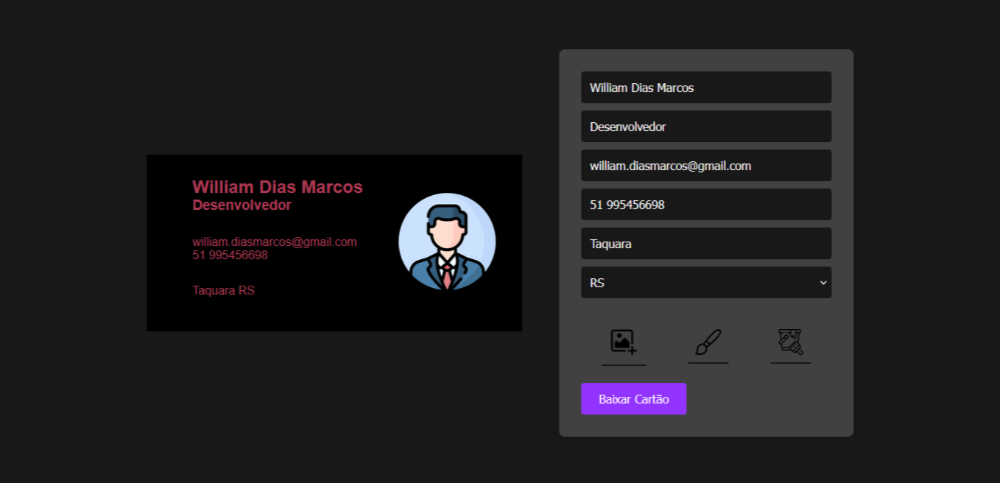
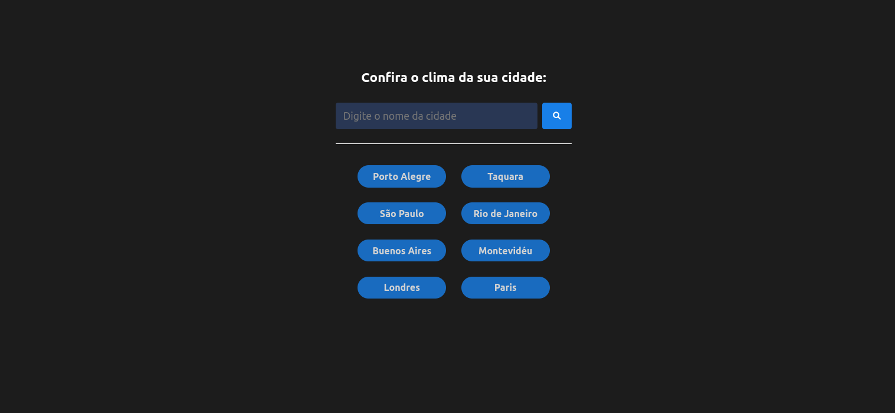
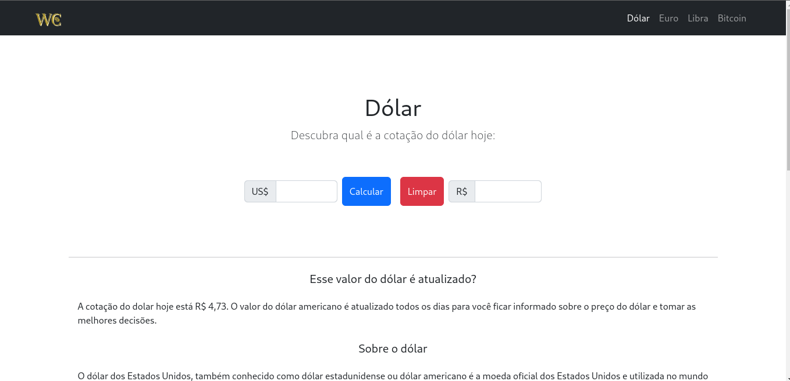

Card Generator é uma página para fazer um Cartão de Visitas, oferecendo um formulário para inserir dados e gerar um cartão de visitas personalizado, permitindo até mesmo a adição de uma imagem, trocar a cor da fonte, do fundo e o download do cartão.
Spaço7 é um estabelecimento que oferece serviços de bem-estar e cuidados pessoais. Desenvolvido como freelancer, o site atende as exigências do cliente, com foco em apresentar os serviços oferecidos no estabelicimento. Foi hospedado em um domínio para estar disponível na internet, proporcionando uma experiência atraente aos usuários.

Weather Forecast representa uma aplicação Angular que fornece previsões meteorológicas em tempo real para cidades globais. Usando a API do OpenWeather que oferece informações meteorológicas confiáveis. Destaca-se pela segurança no desenvolvimento, graças aos testes com o Jasmine, proporcionando uma experiência confiável para atualizações futuras.
Weather Forecast representa uma aplicação Angular que fornece previsões meteorológicas em tempo real para cidades globais. Usando a API do OpenWeather que oferece informações meteorológicas confiáveis. Destaca-se pela confiabilidade no desenvolvimento, graças aos testes com o Jasmine, proporcionando uma experiência confiável para atualizações futuras.
